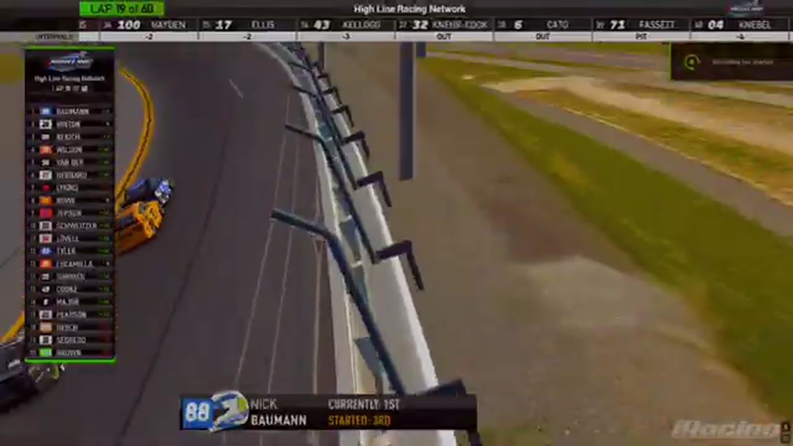

Bryce Hinton
Team assignment not stated in the structured owner record.
A PODIUM FILE WITH AN OPEN RESULT HORIZON
- Official files
- 10
- Central editions
- 4
- Exact tape cues
- 29
- Accepted podiums
- 1
Bryce Hinton has 1 position-specific top-three receipt: S2 R4 at EchoPark Speedway (P2). No feature win is currently supported in the accepted result ledger. A consistently stated team affiliation remains open for owner review. The currently indexed source window runs from November 17, 2025 through July 20, 2026.
The official tape index connects the name to 10 race files, 4 Central editions, and 29 primary-broadcast navigation cues. The densest direct-tape categories are restart (8 cues) and strategy (7 cues). Those counts describe where the name is easiest to find; they are not fault, pace, or performance grades. A source-attributed car frame is published with its original video and timestamp. That is the current discovery map for Bryce Hinton.
That is enough for a real result dossier without pretending the archive knows every start or finish. Owner classifications can extend the record later through the same stable race IDs. Separately, 7 Highline Live files sit on the bonus shelf and never enter the official season ledger. The displayed name is labeled transcript normalized; that status remains visible so an owner roster can strengthen or correct the identity without rewriting the evidence trail. Those boundaries define Bryce Hinton's public HLRN file.
10 featured race-tape cues
These are discovery routes into complete HLRN broadcasts, not performance grades or inferred results.
- S2 / R4 · FINISH
Craig Rowe and Dylan Jones enter the final-lap decision
S2 / R4 at 3:22:14: The white flag opens the final-lap decision at EchoPark Speedway, with Craig Rowe, Dylan Jones, Bryce Hinton, and Vincent Guerrero named in the decisive group. The cut continues through the immediate finish call on the full primary broadcast.
EchoPark Speedway - S2 / R4 · FINISH
Craig Rowe reaches the EchoPark Speedway checkered
S2 / R4 at 3:22:51: The primary tape calls Craig Rowe at the EchoPark Speedway checkered and carries the first replay of the finish. The result label is tied to the accepted ledger.
EchoPark Speedway - S1 / R16 · STAGE
A stage-winner call at Talladega
S1 / R16 at 1:29:39: The broadcast enters a stage-scoring discussion at Talladega with Bryce Hinton, Alex Leeball, and Kyle Cameron in the scoring call. The clip preserves the on-air timing or points call without promoting it into a complete stage result; the accepted feature result ledger remains separate.
Talladega - S1 / R2 · STAGE
HLRN explains Homestead's scheduled stage format
Four laps into the race, the booth explains that the field will stay green through incidental spins, reset at lap 25, and run to the lap-50 Stage 2 checkpoint. This is a format receipt, not a stage-winner or points claim.
Homestead-Miami - S1 / R2 · STAGE
Stage 1 winner call at Homestead-Miami
S1 / R2 at 45:56: The broadcast enters a stage-scoring discussion at Homestead-Miami with Juan Escamilla and Bryce Hinton in the scoring call. The clip preserves the on-air timing or points call without promoting it into a complete stage result; the accepted feature result ledger remains separate.
Homestead-Miami - S1 / R1 · STAGE
Stage 1 scoring discussion at Daytona
S1 / R1 at 45:01: The broadcast enters a stage-scoring discussion at Daytona with Nick Bowman and Bryce Hinton in the scoring call. The clip preserves the on-air timing or points call without promoting it into a complete stage result; the accepted feature result ledger remains separate.
Daytona - S2 / R4 · BATTLE
Bryce Hinton and Craig Rowe carry the EchoPark Speedway lead battle
S2 / R4 at 3:09:38: The EchoPark Speedway pack compresses in a front-pack fight while Bryce Hinton and Craig Rowe are named on the call. The chapter keeps the live battle intact and makes no finishing-order claim.
EchoPark Speedway - S2 / R4 · BATTLE
Bryce Hinton and Ryan Wilson carry the EchoPark Speedway lead battle
S2 / R4 at 3:15:58: The EchoPark Speedway pack compresses in a front-pack fight while Bryce Hinton and Ryan Wilson are named on the call. The chapter keeps the live battle intact and makes no finishing-order claim.
EchoPark Speedway - S2 / R3 · BATTLE
Bryce Hinton brushes the wall during a pass before a separate yellow
Bryce Hinton completes a Helix-versus-Darkhorse pass despite brushing the wall. A yellow then appears for a separate Trace McDowell incident, which HLRN queues after finishing the pass replay.
Chicagoland - S1 / R2 · BATTLE
Homestead-Miami runs side by side at the front
S1 / R2 at 44:52: The Homestead-Miami pack compresses side by side while Bryce Hinton and Jim Sagredo are named on the call. The chapter keeps the live battle intact and makes no finishing-order claim.
Homestead-Miami
Recent editions connected to Bryce Hinton
Rowe Wins the Memorial in the Wreckage
Vincent Guerrero took the stage, Craig Rowe took the last-lap lead, and the David Boyer Memorial ended after 18 reported cautions.
S1 / R16Applegate Wins After Haley's DQ
Trevor Haley reached the stripe first, but HLRN's review removed the No. 12 for a below-yellow-line advance and contact, elevating David Applegate.
S1 / R2Moreno Takes Over Homestead
Juan Escamilla and Bryce Hinton split the stages before Ethan Moreno turned his Highline debut into a feature win.
S1 / R1Porter Opens the Highline Era
Bryce Hinton banked the first stage, but Jaden Porter delivered Darkhorse the inaugural feature win at Daytona.
Verified team history is not consistently stated. Complete starts, finishes, and points remain open beyond the recovered results. Name normalization remains reviewable against owner records.